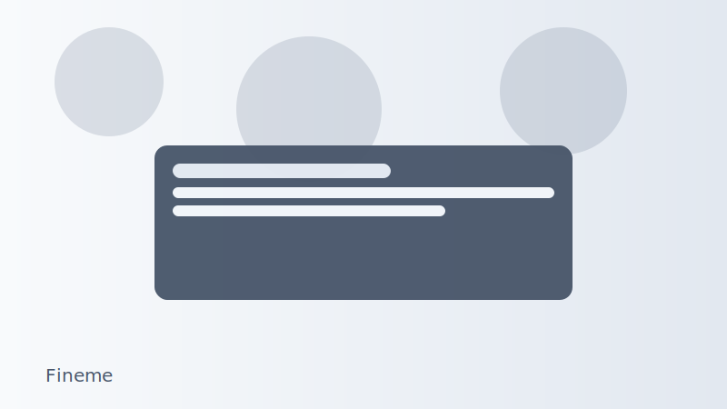

まず始めやすいサービス


Finemeができること（ビジュアルで見る）
診断（軸を知る）
約3分の診断で上位軸を特定してタイプを形成。「納得/寄り添い/最短/進め方/世界観」を把握します。
相性で並ぶ候補
検索結果は価格ではなく「合う可能性」順。タイプに近い掲載者が優先表示され、迷いが減ります。
スターター/ガイド
「スターター3選」とカテゴリ別ガイド/CTAで初手が明確。価格帯・ペース・得意領域・地域のフィルタも。
クイック・空き状況
「今日/週末」クイックとカードの空き状況バッジで、今行ける候補へスムーズに予約できます。
Finemeが提供する価値（Value Proposition）
診断を起点に「相性」で選ぶ流れに沿って、行動までの障壁を最小化します。
- Step 1: 軸診断（約3分）：上位の軸を特定しタイプを形成。自分の考え方に近い基準が分かる。
- Step 2: 相性で並ぶ候補：検索結果は「合う可能性」順。タイプに近い掲載者を優先表示。
- Step 3: ガイド/フィルタで具体化：カテゴリごとの詳しいガイドと、価格帯・ペース・得意領域・地域で絞り込み。
- Step 4: すぐ行ける導線：「スターター3選」「今日/週末」クイックと空き状況バッジで即予約へ。
- Step 5: 保存・比較：気になる候補や診断を保存し、後から比較・再開ができる。
ビフォー・アフター（インタラクティブサンプル）

Before
After